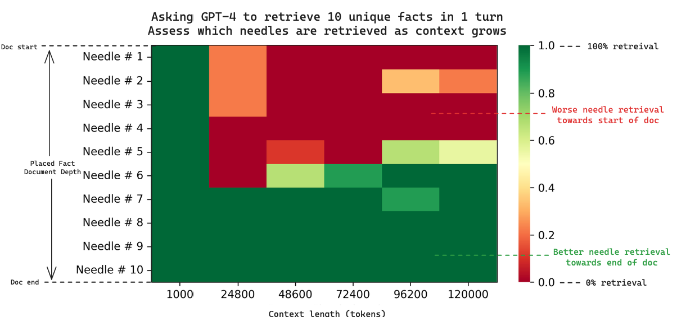
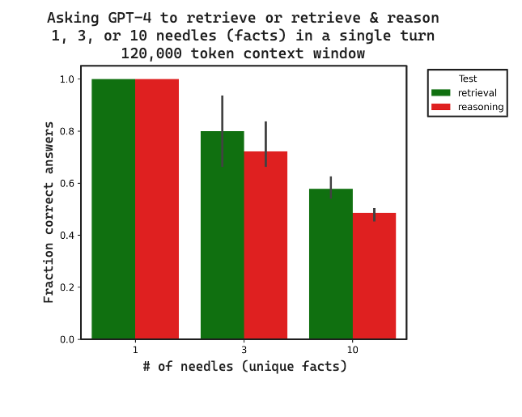

graph LR
U["User Query"] --> F["Fetch<br/>(memories, RAG, history)"]
F --> P["Prepare<br/>(assemble payload)"]
P --> I["Invoke<br/>(LLM + tools)"]
I --> R["Response"]
I -.->|async| Up["Upload<br/>(persist new state)"]
style U fill:#1C355E,stroke:#00C9A7,color:white
style F fill:#00C9A7,stroke:#1C355E,color:#1C355E
style P fill:#9B8EC0,stroke:#1C355E,color:#1C355E
style I fill:#FF7A5C,stroke:#1C355E,color:#1C355E
style R fill:#1C355E,stroke:#00C9A7,color:white
style Up fill:#9B8EC0,stroke:#1C355E,color:#1C355E
Context Engineering: Sessions & Memory
Context Engineering — Session 1
2026-06-11
A. Context Engineering
Stateful agents start here
Agenda
- A. Context Engineering — the discipline
- B. Sessions (Short-Term Memory) — events, state, persistence
- C. Long Context — compaction strategies, mid-conversation model switching
- D. Memory — long-term, cross-session
- E. Memory Pipeline — extract, consolidate, retrieve
- F. Procedural Memory — self-improving agents
- G. Production & Eval — async, security, metrics
- H. Wrap-up — key takeaways
From Prompt Engineering to Context Engineering
Recall from API & Provider Landscape: every turn, you re-send the entire
messageslist. That re-send is the constraint Context Engineering responds to.
Prompt Engineering
- Crafts a static system prompt
- Optimizes wording, examples, format
- Pays off once, used everywhere
- Necessary, not sufficient
Context Engineering
- Dynamically assembles the entire payload
- Selects: history, memories, tools, RAG hits
- Per-turn decisions on what to include
Context Engineering is the mise en place of an agent: gather and prepare every ingredient before the model starts cooking.
The Per-Turn Cycle
- Fetch and Prepare are blocking — the LLM call cannot start until context is ready
- Upload runs async — never make the user wait for memory writes
B. Sessions (Short-Term Memory)
The container for one conversation
What a Session Holds
A session (Short-Term Memory) is one continuous conversation, scoped to one user.
Events (The messages list)
userinput (text/image/audio)assistantresponsetool_call— agent decides to use a tooltool_output— the tool’s result
State (working memory / scratchpad)
- Items in a shopping cart
- Form fields collected so far
- Intermediate calculations
- Anything transient to this conversation
Events are append-only. State is mutable.
The Familiar Shape
You already know this from API & Provider Landscape:
from litellm import completion
events = [
{"role": "system", "content": "You are a helpful assistant."},
{"role": "user", "content": "What's the capital of France?"},
{"role": "assistant", "content": "Paris."},
{"role": "user", "content": "And its population?"},
]
response = completion(model="gpt-4o", messages=events)This is the events half of a session. The state half (cart contents, form fields, intermediate results) lives alongside it — managed by your code, not the LLM.
Stateless Runtime → Persistent Store
In production, your agent process is typically stateless (containers restart, requests load-balance). The session must live somewhere durable.
graph LR
U["User"] -->|"turn N"| A["Agent (stateless)"]
A -->|"load events + state"| S["Session Store<br/>(Redis / Postgres / etc.)"]
S -->|"events list + state dict"| A
A -->|"call LLM"| L["LLM"]
L -->|"response"| A
A -->|"append event · update state"| S
A -->|"reply"| U
style U fill:#1C355E,stroke:#00C9A7,color:white
style A fill:#00C9A7,stroke:#1C355E,color:#1C355E
style S fill:#9B8EC0,stroke:#1C355E,color:#1C355E
style L fill:#FF7A5C,stroke:#1C355E,color:#1C355E
Note
Managed services like LangGraph checkpoints, Vertex Agent Engine Sessions, or your own table in Postgres all serve this role. The framework choice is implementation detail — the concept is what matters.
Session: A Minimal Implementation
class Session:
def __init__(self, session_id: str, store):
self.session_id = session_id
self.store = store # any KV-style backend
# ── Events (append-only) ──────────────────────
def events(self) -> list[dict]:
return self.store.get(f"{self.session_id}:events", default=[])
def append(self, event: dict) -> None:
events = self.events()
events.append(event)
self.store.set(f"{self.session_id}:events", events)
# ── State (mutable scratchpad) ────────────────
def get_state(self, key: str, default=None):
state = self.store.get(f"{self.session_id}:state", default={})
return state.get(key, default)
def set_state(self, key: str, value) -> None:
state = self.store.get(f"{self.session_id}:state", default={})
state[key] = value
self.store.set(f"{self.session_id}:state", state)Deterministic Order
Concurrent turns must be serialized — out-of-order events corrupt the conversation. Use transactional writes or per-session locks.
Session Security
A session can contain anything the user said — names, emails, account numbers, free-form personal stories.
| Concern | Practice |
|---|---|
| Strict isolation | Every read enforces session.owner == request.user (ACLs) |
| PII redaction | Redact before writing to the store, not just before display |
| Audit log | Track who read what, when |
Guardrails: Input & Output Defense covers output-time PII redaction. Sessions need PII redaction at write time too — a leaked session log re-exposes everything.
C. Managing Long Context
Why context windows matter, and how to compact them.
Context Windows & Your API Bill
128K context ≠ 128K tokens free
Every token in your context window is charged on every request — both the history you send and the reply you receive.
KV-cache intuition: The API caches the mathematical representation of previous tokens so each new word generated is cheap. But the cache lives in GPU memory — and the context window is its size limit.
| Context length | Tokens processed (≈ billed cost) |
|---|---|
| 1K tokens | 1× |
| 8K tokens | 8× |
| 128K tokens | 128× |
Performance: The Needle in the Haystack

- Lost in the Middle (Liu et al., 2023): LLMs often ignore facts buried in the middle.
- Recall Degradation: As context grows, retrieval ability drops.
- Placement Matters: Put crucial info at the start or end.
Multi-Needle & Reasoning Challenges
Retrieval is the Upper Bound
- Fact Volume: Retrieval accuracy drops significantly as the number of “needles” (facts) increases.
- Reasoning Penalty: Asking the model to think about multiple retrieved facts is harder than just finding them.
- Upper Bound: If the model can’t retrieve it, it can’t reason about it.

Source: LangChain Multi-Needle Analysis
Key Levers of Context Optimization
Given the cost and “Lost in the Middle” effects of long context, we need strategies to keep the payload tight.
- 1. History Compaction: Shrink or summarize the conversation history (e.g., sliding window, recursive summarization).
- 2. Context Pruning (RAG): Filter retrieved knowledge to only send relevant snippets, not entire documents.
Real-Time Cost Tracking
Use litellm’s built-in usage tracking (e.g. completion_cost) to monitor API costs in real-time during development.
History Compaction Strategies
| Strategy | What it does | Trade-off |
|---|---|---|
| Sliding window (last N) | Keep last N turns, drop the rest | Simple, can lose early context |
| Token truncation | Keep most recent messages until token cap | Preserves recency, hard cutoff |
| Recursive summarization | LLM-summarize old turns; prepend summary | Preserves meaning, adds an LLM call |
| Hybrid | Summary of old + verbatim of recent | Best quality, most complex |
In the wild: Hermes
Hermes’ context_compressor summarizes the middle turns — keeping head and tail verbatim. A direct application of “Lost in the Middle”: compress where the model attends least.
Sliding Window (Simple)
def trim_to_last_n(events: list[dict], n: int = 10) -> list[dict]:
"""Keep system message + last n turns."""
system = [e for e in events if e["role"] == "system"]
rest = [e for e in events if e["role"] != "system"]
return system + rest[-n:]
# Use during context preparation, not when storing
context = trim_to_last_n(session.events(), n=10)
response = completion(model="gpt-4o", messages=context)Trim the Payload, Not the Store
Storage is cheap; tokens are expensive. Keep the full session history persisted — only compact what you send to the model.
Recursive Summarization
SUMMARIZE_PROMPT = """Summarize this conversation.
Preserve facts, decisions, and open questions."""
def compact(events: list[dict], keep_recent: int = 6) -> list[dict]:
if len(events) <= keep_recent:
return events
old, recent = events[:-keep_recent], events[-keep_recent:]
summary = completion(
model="gpt-4o-mini", # cheap model is fine for summaries
messages=[
{"role": "system", "content": SUMMARIZE_PROMPT},
{"role": "user", "content": str(old)},
],
).choices[0].message.content
return [{"role": "system", "content": f"Earlier conversation summary:\n{summary}"}] + recentRun this asynchronously between turns. The next turn just reads the cached compacted version.
When to Compact
| Trigger | When it fires | Best for |
|---|---|---|
| Count-based | Token / turn count crosses threshold | Bursty, predictable workloads |
| Time-based | User idle for N minutes | Long-running advisor agents |
| Event-based | Sub-task / topic completes | Task-oriented agents |
Default to Count-Based
Cheapest to implement, “good enough” for most agents. Add sophistication only when you have data showing it’s needed.
Beyond Compaction: Context as an Environment
Compaction and pruning throw context away to dodge “Lost in the Middle.” A frontier alternative flips the framing: keep all of it, and let the model query it with code.
Recursive Language Models (RLMs) — instead of feeding a giant prompt into the transformer:
- The full prompt is loaded as a variable in a Python REPL — part of the environment, not the attention window.
- The root LLM writes code to inspect it — regex filters, chunking, slicing — to find what matters.
- It recursively calls sub-LLMs on those slices, then aggregates their answers.
Beyond Compaction: Context as an Environment (II)
graph LR
C["Long context<br/>(10M+ tokens)"] -->|"load as variable"| R["Python REPL"]
R --> L["Root LLM<br/>writes code"]
L -->|"slice / filter"| S["Relevant chunks"]
S -->|"recurse"| Sub["Sub-LLM calls"]
Sub --> A["Aggregate → Answer"]
L -.->|"iterate"| R
style C fill:#1C355E,stroke:#00C9A7,color:white
style R fill:#9B8EC0,stroke:#1C355E,color:#1C355E
style L fill:#00C9A7,stroke:#1C355E,color:#1C355E
style Sub fill:#FF7A5C,stroke:#1C355E,color:#1C355E
style A fill:#1C355E,stroke:#00C9A7,color:white
Why it matters: on long-document retrieval (BrowseComp-Plus, millions of tokens), the base model simply can’t fit the input — while the RLM scales to inputs ~2 orders of magnitude past the context window, often at lower median cost than one stuffed call.
| Trade-off | Detail |
|---|---|
| Worse on short inputs | A direct call wins below a crossover length — only pays off when context is huge |
| High cost variance | Runaway trajectories can cost far more than one call |
| Slower | Sub-calls run sequentially today |
| Not trained for it | Models navigate their own context inefficiently |
Same word, opposite philosophy
Recursive summarization (earlier) is lossy — one cheap pass that discards detail. RLM is lossless navigation — it keeps everything and pays per query. A 2025 preprint and frontier technique, not yet settled practice.
Prefix Stability: The Cache’s One Rule
The KV cache matches from the front and stops at the first difference: a hit requires the prefix to be byte-identical to a previous turn.
So where you place content matters as much as how much you send:
| Position | Holds | On a change |
|---|---|---|
| Stable prefix | system prompt, durable memory, tool list | Cached — reused every turn |
| Volatile tail | latest user turn, fresh retrieval | Re-encoded every turn (cheap — it’s small) |
Change one token early — swap a memory, reorder the tool list — and every token after it re-prefills at full cost. The lever: keep volatile content at the end and treat the prefix as frozen.
Foreshadow: a production consequence
Hermes Agent (§3) pushes this to its conclusion — it freezes injected memory at session start to keep the prefix a stable cache key, accepting some staleness to keep the hit. Same rule, all the way.
Switching Models Mid-Conversation Breaks the Cache
The “Opus for planning, Sonnet for execution” dropdown looks free — but the KV cache is provider-and model-specific, so the first turn after the switch pays the full context cost (Prefix Stability).
| Cost surface | Same-model turn | First turn after switch |
|---|---|---|
| KV cache | Hit | Miss — full prefill |
| Tool-call shape in history | In-distribution | Out-of-distribution |
| First-token latency | Low | High |
| Risk of re-invoking another model’s tools | None | Real |
Practical recommendation
Stay with one model for the duration of a conversation unless you have a concrete reason to switch. If you must switch, inject a system note: “You just took over from another model. Some tool calls in this history are not yours — do not re-invoke them.” Cursor, for example, ships this mitigation.
D. Memory
Long-term, cross-session
Sessions vs Memory
Session (Short-Term Memory)
- One conversation
- Raw events, verbatim
- Append-only log
- Lives & dies with the conversation
Memory (Long-Term)
- Spans all the user’s conversations
- Distilled, processed insights
- Curated (created, updated, deleted)
- Persists across sessions, forever (or until pruned)
Session = the messy desk during the project. Memory = the filing cabinet you sort into when the project is done.
What Memory Unlocks
- Personalization — remember the user’s preferences, history, goals
- Context window relief — distill 50 sessions into 10 facts
- Self-improvement — record which strategies worked (procedural memory)
- Cross-user insight — aggregated, anonymized signal across users
Two Types of Memory
Borrowed from cognitive science:
| Type | Answers | Example |
|---|---|---|
| Declarative | “What?” | “User prefers window seats.” |
| Procedural | “How?” | “When booking flights, search direct first, fall back to one-stop.” |
Most memory systems today handle declarative memory. Procedural is the frontier — we’ll come back to it in Section F.
Memory Scope
Who does this memory describe?
| Scope | Example | Use |
|---|---|---|
| User | "User prefers Arabic responses" |
Personalization (most common) |
| Application | "Project codename ATLAS = Q4 launch" |
Shared facts for all users |
Strict Isolation by Default
User-scoped memory must never leak across users. Application-scoped memory must be sanitized of any user PII.
Memory Organization Patterns
Three common shapes:
Narrative
Rolling Summary
One natural-language doc, continuously updated/rewritten.
“User is a vegetarian based in Riyadh who travels frequently and prefers window seats…”
🔄 Lookup: Whole-document context injection.
Where Memory Lives
These are the same storage families you saw in RAG. Here we focus on what’s distinct about memory content.
| Storage | Strength | Weakness |
|---|---|---|
| Vector DB | Semantic similarity (“things conceptually like X”) | No relational reasoning |
| Knowledge graph | “User → works_at → Company → in → City” | Heavy schema, slower setup |
| Hybrid | Graph nodes embedded as vectors | More moving parts |
Same tooling you saw in RAG. The content and update patterns are what differ.
E. The Memory Pipeline
Extract, consolidate, retrieve
Memory Generation = LLM-Driven ETL
graph LR
S["Session events"] -->|extract| R["Raw memories"]
R -->|"compare with existing"| C{"Consolidate"}
C -->|"new"| CR["CREATE"]
C -->|"contradicts"| D["DELETE"]
C -->|"refines"| U["UPDATE"]
CR --> ST["Memory Store"]
D --> ST
U --> ST
style S fill:#1C355E,stroke:#00C9A7,color:white
style R fill:#00C9A7,stroke:#1C355E,color:#1C355E
style C fill:#9B8EC0,stroke:#1C355E,color:#1C355E
style ST fill:#FF7A5C,stroke:#1C355E,color:#1C355E
The LLM decides: what’s worth remembering, and how does it interact with what we already know?
Influential early treatment: MemGPT: Towards LLMs as Operating Systems (Packer et al., 2023) framed LLM memory as OS-style virtual-context paging. The extract → consolidate retrieval triad we score below traces more directly to Generative Agents (Park et al., 2023).
Extraction
Filter the signal from the noise.
from pydantic import BaseModel
class ExtractionResult(BaseModel):
facts: list[str]
EXTRACT_PROMPT = """Read the conversation. Extract only durable facts about the user that
would be useful in a future session: preferences, goals, constraints, key context.
Ignore: greetings, jokes, transient state, restated facts."""
def extract(events: list[dict]) -> list[dict]:
response = completion(
model="gpt-4o",
messages=[
{"role": "system", "content": EXTRACT_PROMPT},
{"role": "user", "content": str(events)},
],
response_format=ExtractionResult, # ← Pass the Pydantic schema
)
parsed = ExtractionResult.model_validate_json(response.choices[0].message.content)
return [f.fact for f in parsed.facts]“Meaningful” is application-specific. A wellness coach extracts mood; a support agent extracts ticket numbers. Customize the prompt.
Consolidation
Reconcile new extractions with what’s already stored.
| Operation | Trigger |
|---|---|
| CREATE | Topic is new |
| UPDATE | Same topic, more nuance (“interested in marketing” → “leads marketing for Q4 launch”) |
| DELETE | Direct contradiction or invalidation |
Without Consolidation
You get a noisy, contradictory log of every fact ever mentioned — worse than no memory at all.
When to Generate Memory
| Strategy | Cost | Freshness |
|---|---|---|
| Every turn | Highest | Most current |
| Every N turns | Medium | Lags by N turns |
| At session end | Lowest | One batch per session |
| Memory-as-a-tool | Variable | Agent decides — most flexible |
Default: at session end, in the background. Use memory-as-a-tool when the agent should decide (“user just said ‘remember this’”).
Memory-as-a-Tool
Expose memory writes as a tool the agent can call.
def remember(fact: str, scope: str = "user") -> dict:
"""Persist a durable fact about the user.
Use when the user says 'remember', or when they share a stable
preference, goal, or constraint worth recalling later."""
memory_store.upsert(user_id=current_user, fact=fact, scope=scope)
return {"status": "ok"}
agent_tools = [search, calculate, remember] # add to ReactAgent's toolkitMemory Provenance
Track where each memory came from.
| Source | Trust |
|---|---|
| Bootstrapped (CRM, signup form) | Highest — solves cold-start |
| User explicit (“remember my anniversary is…”) | High |
| User implicit (inferred from chat) | Medium |
| Tool output (cached API response) | Low — stale fast |
When sources conflict, the highest-trust + most-recent wins. Without provenance, you can’t resolve conflicts at all.
Retrieval
RAG (which you saw earlier) ranks retrieval by relevance (topical similarity) alone. Memory retrieval needs two extra dimensions (Recency, Importance) on top of that — the triad introduced by Generative Agents (Park et al., 2023):
| Dimension | What it asks |
|---|---|
| Relevance | Is this memory topically related to the current turn? |
| Recency | How recently was this captured? |
| Importance | How significant was this memory at generation time? |
Where Retrieved Memory Goes
Two placement options, with different trade-offs:
System prompt
You are an assistant.
Known about user:
- Prefers Arabic
- Vegetarian- High authority
- Always present
- Can over-influence (“everything is about food”)
Dialogue injection / tool
Retrieved as a tool result, mid-conversation.
- Only when relevant
- Lower over-influence risk
- Risk of dialogue injection: model may treat it as something the user said
Hybrid: stable global facts (profile) in system prompt; episodic facts retrieved as needed.
F. Procedural Memory
Self-improving agents
Procedural ≠ Declarative
| Declarative | Procedural | |
|---|---|---|
| Stores | Facts | Strategies / playbooks |
| Source | What the user said | What worked in past runs |
| Use | “Insert into context as evidence” | “Follow this approach for tasks like X” |
The Self-Improvement Loop
graph LR
A["Agent attempts task"] --> O["Outcome"]
O -->|"success"| E["Extract<br/>winning strategy"]
O -->|"failure"| E2["Extract<br/>failure mode"]
E --> P["Procedural Memory<br/>(playbook)"]
E2 --> P
P -->|"retrieve relevant playbook"| A
style A fill:#1C355E,stroke:#00C9A7,color:white
style O fill:#FF7A5C,stroke:#1C355E,color:#1C355E
style P fill:#00C9A7,stroke:#1C355E,color:#1C355E
Each successful run leaves the agent slightly better at the next run, without retraining a single weight.
Failure mode
Procedural memory entries are themselves LLM-generated — a bad playbook persists and re-corrupts every future run. Always score, version, and gate writes behind a success-rate threshold; “self-improving” agents that write unconditionally tend to drift, not learn.
Key Research: Reflexion (Shinn et al., 2023) — verbal reinforcement · VOYAGER (Wang et al., 2023) — skill libraries (procedural memory)
Fine-Tuning vs Procedural Memory
| Fine-Tuning | Procedural Memory | |
|---|---|---|
| Mechanism | Updates model weights | Injects a playbook into the prompt |
| Setup | Slow, offline, requires labeled data | Fast, online, autonomous |
| Reversibility | Hard | Trivial (delete the memory) |
| Per-user customization | Expensive | Free |
In-Context Learning Wins for Personalization
Fine-tuning is right for global behavior changes. Procedural memory is right when the “right” approach varies per user, per task, or per week.
G. Production & Evaluation
What changes at scale
Async Pipeline
graph LR
A["Agent replies"] --> R["User"]
A -.->|"non-blocking"| Q["Memory Service"]
Q --> E["Extract"]
E --> C["Consolidate"]
C --> S["Memory Store"]
style A fill:#1C355E,stroke:#00C9A7,color:white
style R fill:#00C9A7,stroke:#1C355E,color:#1C355E
style Q fill:#9B8EC0,stroke:#1C355E,color:#1C355E
style S fill:#FF7A5C,stroke:#1C355E,color:#1C355E
Never Block on Memory Writes
Memory generation costs an LLM call. Blocking the user’s reply on it adds 1–3 seconds of pure latency for no user-visible benefit.
Production Concerns
| Concern | What to do |
|---|---|
| Concurrency | Optimistic locking on per-memory updates; queue heavy generation |
| Failure handling | Retry with exponential backoff; dead-letter for repeated failures |
| Multi-region | Memory store needs replication — consolidation requires consistent reads |
| Privacy | Per-user ACLs; PII redaction before persistence; opt-out for memory generation; honor delete-on-request (GDPR-style targeted erasure of a user’s memories) |
| Memory poisoning | Malicious user input → “fact” extracted → poisons future turns. Sanitize at write time. |
| Embedding drift | Stored vectors go stale if you change the embedding model — keep the embedder versioned, and re-embed the store on upgrade |
Evaluation: Measure the Lift, Not the Fact Count
You already have the eval machinery from RAG evaluation — memory reuses all of it:
- Extraction is graded like generation — precision / recall of captured facts vs a golden set
- Retrieval is graded like RAG — Recall@K, latency
But those are leading indicators. The headline question is whether memory changes outcomes:
Measure memory by task-success lift — not by counting facts.
Evaluation: Ablation vs. A/B Testing
Prove it once, then A/B the config
Memory isn’t free — tokens, latency, poisoning, over-influence — so the lift is not guaranteed.
- Justify it once with a memory-on vs memory-off ablation: replay your golden sessions with the pipeline wired in vs stubbed out.
- After that, on/off retires. A/B the configuration instead — injection placement, recency/importance weights, extraction cadence.
Observability & Evaluation will frame Task Success Rate as the headline agent metric; this is its memory-specific instance.
H. Wrap-up
Key Takeaways
- LLMs are stateless. Context Engineering is the discipline of building the right payload every turn.
- Sessions = one conversation, events + state, persisted in a durable store.
- Context Windows are expensive and performance-bound—be strategic about what you include.
- Compact what you send, not what you store. Sliding window, token cap, recursive summary.
- Memory = cross-session, distilled. Declarative for facts, procedural for playbooks.
- Memory pipeline = extract → consolidate (CREATE/UPDATE/DELETE) → store → retrieve.
- Always async, always isolated, always evaluated.
Further Reading & Foundational Research
- Context Engineering: Sessions & Memory — Kimberly Milam & Antonio Gulli, Google, Nov 2025
- Generative Agents (Park et al., 2023) — Seminal work on memory streams and scoring.
- MemGPT (Packer et al., 2023) — Foundational “LLMs as OS” architecture for stateful agents.
- Reflexion & Voyager (2023) — Key papers for self-improving agents and procedural memory.
- Recursive Language Models (Zhang, Kraska & Khattab, 2025) — Treat long context as a navigable environment instead of compacting it.
Tooling
- LangGraph: state-as-session pattern
- Vertex Agent Engine: Sessions & Memory Bank (managed)
- Mem0, Zep: open memory managers